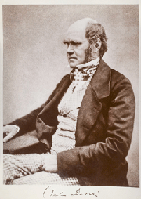

- Title Page
- Introduction
- York's Newspapers
- The School Board
- A new theory
- Darwin's theory
- A legal history of evolution
- Intelligent Design
- When science meets politics
- September story
- The statement and the lawsuit
- Covering the controversy
- Holes in evolutionary theory?
- Spotlight on Dover
- The trial: The plaintiffs' case
- The trial: The defense
Darwin's theory

Charles Darwin.
Charles Darwin, a 19th-century British naturalist, was not the first to argue that species changed—sometimes into entirely different species—over time. He was, however, the first to publish an explanation of how it worked. Darwin’s theory of “natural selection” proposed that in competition for scarce resources, species with features better suited to their environment flourished and reproduced, passing on their advantageous characteristics to their offspring, while species without such advantages eventually died out. Darwin published his findings in On the Origin of Species in 1859. He concluded that “species have been modified, during a long course of descent, chiefly through the natural selection of numerous successive, slight, favorable variations.”[1] This, he argued, accounted for the wide variety of species on earth, which he claimed had originated millions of years ago from a single ancestor.
He was aware that this idea would draw fierce resistance, as it challenged the Bible’s story of life’s origins as laid out in the book of Genesis. The Bible said that God had created all animals in their present form in a period of six days, culminating with the creation of man and woman, Adam and Eve. The idea that animals—including humans—had developed over millions of years from a series of random mutations that favored some species while others vanished from the face of the globe challenged not only the narrative of the creation story but also the very idea of God as a benevolent, purposeful agent watching over all life forms from the heavens. The backlash was immediate and lasting.
[1] Charles Darwin, cited in Edward J. Larson, Summer for the Gods: The Scopes Trial and America’s Continuing Debate over Science and Religion (Basic Books: New York), 2006, p. 17.